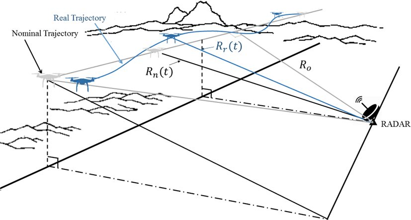

연구 과제
레이다 신호분석을 통한 드론탐지 및 분류기법 연구

개요
소형 드론은 크기가 작고 전파 반사도가 낮아 단순 반사 신호 탐지만으로는 식별이 어렵다는 문제에서 출발해, 레이다 신호 분석으로 드론을 탐지·분류하는 기법을 연구한 과제이다. 연구실은 CW 레이다의 마이크로 도플러 분석이 회전익 로터 성분만 다루어 식별에 한계가 있음을 실험으로 보이고, 광대역 FMCW·펄스 레이다의 ISAR 영상으로 비행 드론의 고해상도 프로파일을 얻어 다중 드론 표적의 탐지·분류에 활용하는 방향을 제시하였으며, 이후 시뮬레이션·실측 레이다 영상에 CNN 기계학습을 적용한 분류 연구로 이어졌다. 드론 탐지 실험은 한국항공대학교 교내(활주로)에서 수행되었다.
주요 내용·성과
- CW 마이크로 도플러 분석과 FMCW ISAR 영상의 드론 식별 성능 비교 실험 — 송경민·문민정·이우경, 한국군사과학기술학회지 21(2), 2018.04
- 지상 펄스 레이다로 비행 드론을 추적·코히어런트 처리하여 ISAR 영상 기반 드론 탐지 구현 — 한국전자파학회논문지 28(2), 2017.02 (사사: "2016년도 국가보안기술연구소 연구비")
- 레이다 영상(ISAR·마이크로 도플러)에 CNN 기계학습을 적용한 드론 탐지·분류 — 문민정·이우경, 한국정보통신학회논문지 25(5), 2021.05